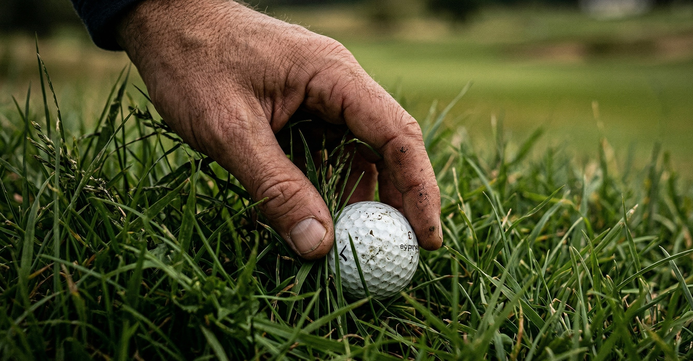

Our Sustainable Products

The Greenscape Bio-Ball
Never feel guilty about a water hazard again. Our flagship product is a 3-piece tournament-grade golf ball crafted entirely from compressed natural starches, organic polymers, and a specialized biodegradable urethane cover.
- ✓ Dissolves naturally within 6 months of water exposure.
- ✓ 100% Non-toxic to aquatic and plant life.
- ✓ Professional compression rating for maximum distance.
Order a Sleeve ($15)
The Hidden Cost of Golf
Traditional golf balls are made of synthetic plastics and heavy metals. When they end up in the rough, lakes, or oceans, they don't just disappear.
300M+
Golf balls are lost in the United States every single year, littering courses and local water systems.
1,000
Years it takes for a traditional polyurethane golf ball to decompose, breaking down into harmful microplastics.
Zero
The ecological footprint left behind when you choose to play with Greenscape Golf innovations. Play responsibly.